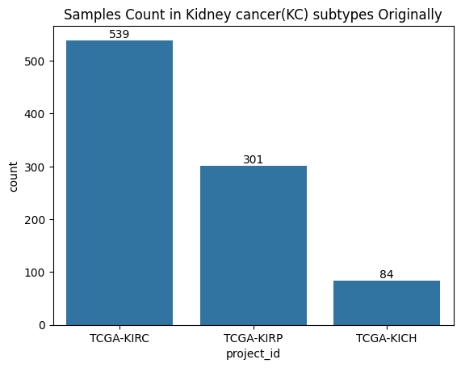
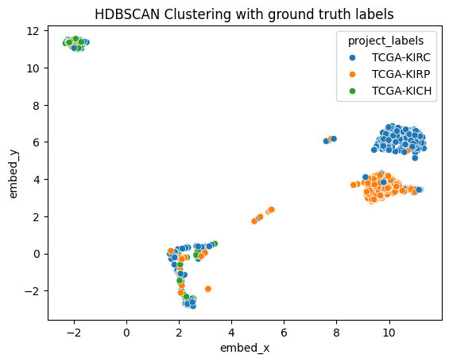
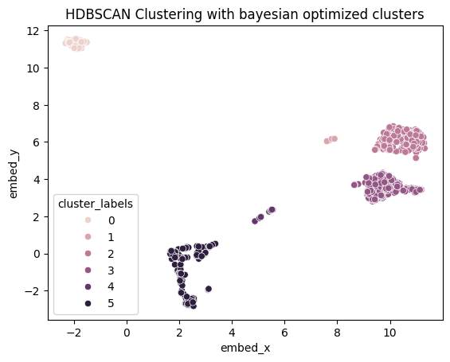

In this analysis, we'll explore gene expression data from kidney cancer samples using UMAP for dimensionality reduction and HDBSCAN for clustering. We'll go through the process of data preprocessing, visualization, and clustering to uncover patterns in the data.
We start by loading gene expression data and clinical information:
import pandas as pd
import numpy as np
import matplotlib.pyplot as plt
import seaborn as sns
import OmicsUtils.DimRedMappers.clusterer
import OmicsUtils.DimRedMappers.umap_embedders
fpkm_unstr_df_with_labels = pd.read_csv('./Transcriptomics/data/processed_data/fpkm_unstr_data_with_labels.csv')
exposure_tsv = pd.read_csv('./Transcriptomics/data/clinical.cart.2023-10-29/exposure.tsv', sep='\t')
ge_kidney_cancer_data_with_tgca_labels = pd.merge(fpkm_unstr_df_with_labels,
exposure_tsv[['case_submitter_id', 'project_id']],
left_on='Case_ID',
right_on='case_submitter_id')
We apply log transformation to gene expression values and visualize the distribution:
description_df = fpkm_unstr_df_with_labels.iloc[:, :60660].describe().reset_index()
showing_value_range = description_df[description_df['index'].isin(['min', 'mean', 'max'])].iloc[:,1:].values.flatten()
ax = sns.distplot(showing_value_range)
ax.set_title("Distribution of min, mean, max of all gene expression values")

We split our data into training, validation, and test sets:
from sklearn.model_selection import train_test_split
# Split data into training+validation and test sets
train_val_ids, test_ids = train_test_split(ml_df_without_overlap.index, test_size=0.2, random_state=42, stratify=ml_df_without_overlap['project_id'])
# Further split training+validation into training and validation sets
train_ids, val_ids = train_test_split(train_val_ids, test_size=0.2, random_state=42, stratify=ml_df_without_overlap.loc[train_val_ids, 'project_id'])
# Create a DataFrame to store the split information
train_val_test_ids_df = pd.DataFrame({'Case_ID': ml_df_without_overlap.index, 'split': 'train'})
train_val_test_ids_df.loc[val_ids, 'split'] = 'val'
train_val_test_ids_df.loc[test_ids, 'split'] = 'test'
# Merge with project_id information
train_val_test_ids_df = pd.merge(train_val_test_ids_df,
ml_df_without_overlap[['project_id']],
left_on='Case_ID',
right_on='Case_ID')
# Visualize the split
plt.figure(figsize=(10,5))
ax = sns.countplot(data=train_val_test_ids_df, x='project_id', hue='split')
ax.set_title('Samples count in KC tumor types training/testing/validation')
plt.show()

We use UMAP to reduce the dimensionality of our gene expression data:
umap_embedder = OmicsUtils.DimRedMappers.umap_embedders.UMAPEmbedder(n_neighbors=15, min_dist=0.1, n_components=2, metric='cosine')
umap_embedding = umap_embedder.fit_transform(ml_df_without_overlap[gene_cols])
umap_embedding_df = pd.DataFrame(umap_embedding, columns=['embed_x', 'embed_y'])
umap_embedding_df['tumor_type_labels'] = ml_df_without_overlap['project_id']
umap_embedding_df['Sample_Type'] = ml_df_without_overlap['Sample_Type']
ax1 = sns.scatterplot(data=umap_embedding_df, x="embed_x", y="embed_y", hue="tumor_type_labels")
ax1.set_title("UMAP embedding of gene expression data")
plt.show()

We apply HDBSCAN clustering to our UMAP-reduced data:
clusterer = OmicsUtils.DimRedMappers.clusterer.HDBSCANClusterer(min_cluster_size=5, min_samples=5)
cluster_labels = clusterer.fit_predict(umap_embedding)
umap_embedding_df['cluster_labels'] = cluster_labels
ax3 = sns.scatterplot(data=umap_embedding_df, x="embed_x", y="embed_y", hue="cluster_labels")
ax3.set_title("HDBSCAN Clustering with bayesian optimized clusters")
plt.show()

Finally, we create a combined plot to compare the UMAP embeddings colored by tumor type, sample type, and cluster labels:
fig, axes = plt.subplots(3, 1, figsize=(10, 20))
sns.scatterplot(ax=axes[0], data=umap_embedding_df, x='embed_x', y='embed_y', hue='tumor_type_labels')
sns.scatterplot(ax=axes[1], data=umap_embedding_df, x='embed_x', y='embed_y', hue='Sample_Type')
sns.scatterplot(ax=axes[2], data=umap_embedding_df, x='embed_x', y='embed_y', hue='cluster_labels')
fig.suptitle('UMAP(Cosine) + HDBSCAN on Kidney Cancer Gene Expression Data', fontsize=20)
fig.tight_layout()
fig.subplots_adjust(top=0.95)
plt.show()

In this analysis, we've demonstrated how to use UMAP for dimensionality reduction and HDBSCAN for clustering on kidney cancer gene expression data. The visualizations reveal interesting patterns and potential subgroups within the data, which could have implications for understanding different types or stages of kidney cancer. Further investigation into the biological significance of these clusters could provide valuable insights for cancer research and treatment strategies.